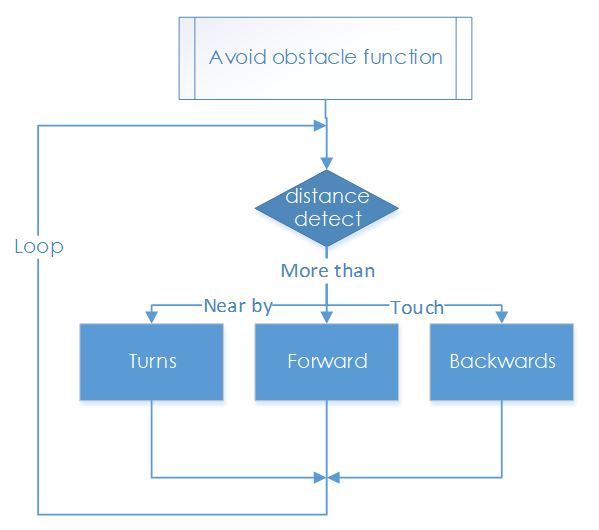

Obstacle Avoidance¶
How it Works¶
The ultrasonic obstacle avoidance module detects and transfers the collected data to Raspberry Pi that can calculate the distance from the obstacle. The Pi will send a command to adjust the front wheels and rear wheels direction and rotation to control the PiCar-S walk away from the obstacle if there is one.
Procedures¶
Step 1 Assembly
① Connect the ultrasonic module to the ultrasonic connector with M1.4*8 screws and M1.4 nuts.
② Then connect them to the ultrasonic support with M3*10 screws and M3 nuts.
③ Finally,assemble them to the Upper Plate with M3*10 screws and M3 nuts.

Reminder: It would be easier to place the nuts into the slots with your fingers to hold underneath.
Step 2 Wiring
Connect the ultrasonic obstacle avoidance to Robot HATS with a 4-pin anti-reverse cable as shown below.
Ultrasonic module can have a 5V or 3.3V power supply. Here, we give it a 3.3V power supply.


Step 3 Test
First, test the ultrasonic obstacle avoidance module before applying.
cd ~/SunFounder_PiCar-S/example/
python3 test_ultrasonic_module.py
You may find that the distance measurement may be not that accurate. It doesn’t matter. This 25kHz ultrasonic module is not a commonly used one, but one has a horizontal detecting range of about 30~40 degrees. Thus the distance measured may be not so accurate, but that small range provides convenience for obstacle avoidance. Besides, since the Raspberry Pi is not a real-time operating system, the inaccurate time calculation will affect the accuracy of distance measurement too. However, this ultrasonic module is precise enough for obstacle avoidance.
Step 4. Get on the road!
Now we have a general idea of the ultrasonic module’s effect after the test above. Let’s run the code of the ultrasonic obstacle avoidance.
python3 ultra_sonic_avoid.py
The PiCar-S starts running now. Just place the car on the ground. It will follow the program to turn when it detects an obstacle; if the obstacle is too close, it will move backwards, and turn left/right. You can also modify the threshold of obstacle detecting range and that of moving backwards in the code.

Code Explanation for ultra_sonic_avoid.py¶
Whole Work Flow

The ultrasonic module returns a digital value, i.e., High or Low level, and the interval time between two levels returned can be converted to the distance to the obstacle. Thus, we call the time module in Python for timing here. The formula to calculate the distance is written in the ultrasonic module’s driver. The main program just calls the corresponding program to get the distance value.
Subflow of the Obstacle Avoidance Function
When the car starts, it will detect obstacles and measure the distance in cycle, make judgement, and take actions. Here are three cases: when the distance to the obstacle is equals to the threshold, the car will turn directions; when the distance is less than the threshold, the car will move backwards before turning direction; when the distance is more than the threshold, it will keep moving forwards.
Functions Explanation
ua = Ultra_Sonic.UltraSonic_Avoidance(17)
Create an object ua of a UltraSonic_Avoidance class in the Ultra_Sonic module. The number in the round bracket is the initial parameter, which represents the pin number the SIG of the module is connected to. Since the BCM naming method is applied, the corresponding pin on the Raspberry Pi is #17.
back_distance and turn_distance, two constants are to set the thresholds of the ranging distance.
while() loop
When the detected distance is less than the back_distance, the car will move backwards; when it is between back_distance and turn_distance, the car will turn a direction (you can set the turning angle in the aforementioned parameter turning_angle and the angle can be a positive or negative number, for turning left or turning right respectively; NOTE that the number of the turning angle should be -90 to 90 considering the servo’s max rotation degrees, or the servo may be burnt.); when the detected distance is greater than the turn_distance, the car will keep moving forward.
bw.backward(), making the rear wheels rotate backwards; bw.forward(), making the rear wheels spin forward. These two functions in the rear wheel driving module back_wheels are to set the wheel’s rotating direction.
bw.set_speed(speed), function in the back_wheels, to set the wheel's rotating speed. The larger the number (within the range 0-100) is, the faster the wheel rotates.
fw.turn(angle), function in the back_wheels, to set the turning angle. The angle is 90 when the car moves straight forwards; reduce the number to turn left, and increase it to turn right.
fw.turn_straight(), making the front wheels return to the angle of moving straight forwards.
More:
back_distance and turn_distance
Try to modify the constants to make the car back off and turn away in a desired distance and angle as you like during the obstacle avoidance.